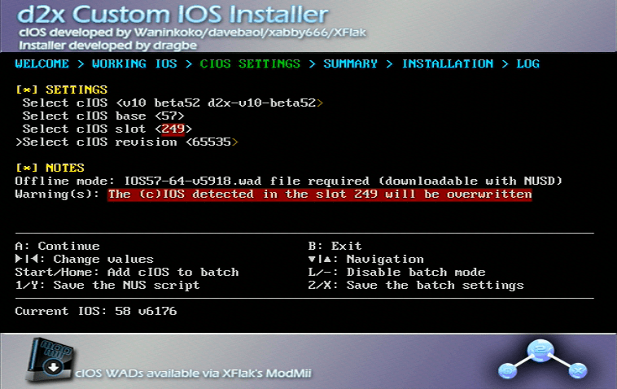

cIOS
Ce tutoriel vous apprendra comment installer un cIOS (IOS customisé). C’est nécessaire si vous souhaitez lancer des jeux en utilisant un Loader USB. Certains homebrew peuvent mieux fonctionner grâce à l’utilisation d’un cIOS.

Si vous avez une Wii U (vWii), suivez ce guide pour installer cIOS à la place. Tenter d’installer tout autre cIOS sur vWii ne fonctionnera pas.
Si vous avez une Wii mini, installez ce cIOS à la place. Tenter d’installer tout autre cIOS sur une Wii mini ne fonctionnera pas.
Ce dont vous avez besoin
- Une Wii
- Une carte SD ou un périphérique USB
- d2x cIOS Installer
Assurez-vous que si vous utilisez une carte SD, le commutateur de verrouillage est en position de déverrouillage sinon vous ne serez pas en mesure de sélectionner les bonnes options dans l’installateur
Instructions
Section I - Téléchargement
- Téléchargez le programme d2x cIOS Installer et extrayez-le à la racine de votre carte SD ou de votre lecteur USB.
- Insérez votre carte SD ou votre clé USB dans votre Wii, et lancez l’installateur d2x cIOS à partir de la chaîne Homebrew.
Section I - Téléchargement
- Téléchargez, extrayez et exécutez NUS Downloader.
- Sélectionnez “Database”, “IOS”, puis “IOS57”, et sélectionnez “v5918”.
- Assurez-vous que”Pack WAD” est coché et “Patch IOS” est décoché.
- Répétez l’étape précédente pour IOS56 v5661 et IOS38 v4123.
- Une fois que vous aurez téléchargé les trois IOS, il y aura un dossier nommé
titlesdans le même dossier que le NUS Downloader. Ouvrez le dossier et naviguez jusqu’à ce que vous trouviez les trois fichiers WAD que vous avez téléchargés. Placez chacun des fichiers WAD à la racine de votre carte SD ou de votre clé USB. - Téléchargez le programme d2x cIOS Installer et extrayez-le à la racine de votre carte SD ou de votre lecteur USB.
- Insérez votre carte SD ou votre clé USB dans votre Wii, et lancez l’installateur d2x cIOS à partir de la chaîne Homebrew.
Section II - Installation
- Appuyez sur continuer, appliquez ensuite les options suivantes:
Select cIOS: v10 beta52 d2x-v10-beta52
Select cIOS base: 57
Select cIOS slot: 249
Select cIOS version: 65535

- Une fois appliqué, appuyez deux fois sur A pour installer.
- Quand l’installation est terminée, appuyez sur A pour revenir à l’écran précédent, et appliquez les options suivantes:
Select cIOS: v10 beta52 d2x-v10-beta52
Select cIOS base: 56
Select cIOS slot: 250
Select cIOS version: 65535

- Une fois appliqué, appuyez deux fois sur A pour installer.
- Quand l’installation est terminée, appuyez sur A pour revenir à l’écran précédent, et appliquez les options suivantes:
Select cIOS: v10 beta52 d2x-v10-beta52
Select cIOS base: 38
Select cIOS slot: 251
Select cIOS version: 65535

- Une fois réglé, appuyez deux fois sur A pour installer, puis quittez une fois terminé.
Dépannage
Bien que la majorité des jeux devraient fonctionner directement avec les valeurs par défaut, certains peuvent nécessiter l’utilisation d’un cIOS spécifique pour fonctionner, ou pour utiliser certaines fonctionnalités du jeu.
Les exemples incluent :
- Utilisation d’un clavier dans Animal Crossing : City Folk.
- Jouer à SpongeBob’s Boating Bash.
Une liste plus complète (bien qu’encore incomplète) se trouve à l’adresse suivante ici
Pour changer le cIOS utilisé pour un jeu spécifique, suivez ces instructions :
- Sélectionnez le jeu qui ne fonctionne pas.
- Cliquez sur Paramètres.
- Sélectionnez
Game Load. - Faites défiler vers le bas jusqu’à
Game IOS. - Entrez le slot IOS à utiliser.
- Essayez d’utiliser 250 ou 251, si 249 ne fonctionne pas.
- Appuyez sur ok et essayez de charger le jeu.
- Sélectionnez le jeu qui ne fonctionne pas.
- Cliquez sur l’icône de l’engrenage.
- Allez dans cIOS et utilisez les flèches pour sélectionner le slot IOS à utiliser.
- Essayez d’utiliser 250 ou 251, si 249 ne fonctionne pas.
- Appuyez sur Enregistrer et essayez de charger le jeu.
Options disponibles une fois le processus terminé
Continuer vers le navigateur d’homebrew
Le navigateur d’homebrew est un bon endroit pour obtenir de l’homebrew sur votre Wii. L’installation est facultative.
Continuer vers la navigation du site
Nous avons de nombreux autres tutoriels que vous pourriez aimer.
Vous pouvez maintenant utiliser des homebrew comme USB Loader GX et WiiFlow.